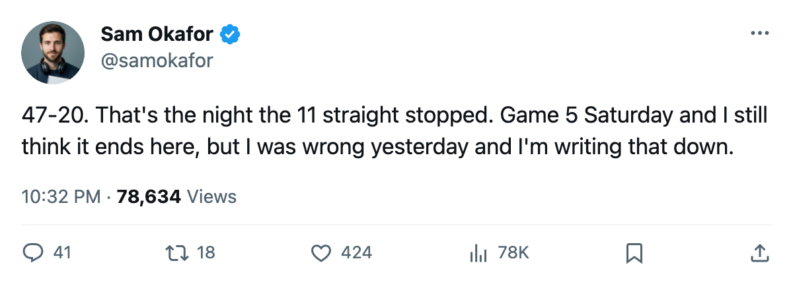

TOR
TOR NYI
NYILEAFS 1, ISLANDERS 3, series 3-1: 47 pucks at Luongo, 20 back, and Game 5 on Saturday
The shot total flips for the first time this spring, and the 11-game regular-season run that carried this club into the bracket finally ends on the road
 Sam OkaforLeafs beat reporter · Queen City Telegram
Sam OkaforLeafs beat reporter · Queen City Telegram
Toronto lost Game 4 of the first round on the road, 3-1, on 47 shots against and 20 for. The series stands at  Mats Sundin91 and company, 3-1, with Game 5 at the Air Canada Centre on 2005-04-16.
Mats Sundin91 and company, 3-1, with Game 5 at the Air Canada Centre on 2005-04-16.
We said on Thursday that Toronto would win this game. It did not.
The shot number is the one that stops you cold. Across the first three games, New York never once outshot this Toronto club. On Thursday at the Coliseum, the Islanders put 47 pucks on  Roberto Luongo94 and
Roberto Luongo94 and  Marian Gaborik98 and the rest managed 20 the other way. A 27-shot gap in a playoff game is a structural failure. The scoreline says the club got outplayed in front of and behind the play.
Marian Gaborik98 and the rest managed 20 the other way. A 27-shot gap in a playoff game is a structural failure. The scoreline says the club got outplayed in front of and behind the play.
Luongo's line moves to 3-1, a 1.51 GAA, a .963 save percentage across four games. Three of those four games he gave up one goal. Thursday he gave up three, on 47. The first-round save percentage that sat at .963 for three games now has a crack in it, and the crack arrived on the night the man across the crease,  Rick DiPietro84, stopped 19 of 20.
Rick DiPietro84, stopped 19 of 20.
The scoring on Toronto's side stayed distributed. Marian Gaborik has 2 goals and 5 assists in four games.  Gary Roberts88 carries 1 and 5. Mats Sundin sits at 3 and 1.
Gary Roberts88 carries 1 and 5. Mats Sundin sits at 3 and 1.  Barret Jackman86 has 2 and 0. The top men are producing. Twenty shots will not win a Game 5 if the opponent plays the way New York played in front of its own net for 60 minutes.
Barret Jackman86 has 2 and 0. The top men are producing. Twenty shots will not win a Game 5 if the opponent plays the way New York played in front of its own net for 60 minutes.
What Game 5 requires
New York's  Chris Simon73 has 3 goals in 4 games against a defense that gave up 190 goals in 82 regular-season games.
Chris Simon73 has 3 goals in 4 games against a defense that gave up 190 goals in 82 regular-season games.  Radim Vrbata76 has nothing to do with this series, but
Radim Vrbata76 has nothing to do with this series, but  Adrian Aucoin80 has 1 and 1, and
Adrian Aucoin80 has 1 and 1, and  Mike Peca86 carries 0 and 2. The Islanders do not have a scorer on this roster graded above 80 who has produced. What they have is volume, and volume worked on Thursday.
Mike Peca86 carries 0 and 2. The Islanders do not have a scorer on this roster graded above 80 who has produced. What they have is volume, and volume worked on Thursday.
Game 5 goes at home, where this club went 33-8 across the regular season. The Islanders went 17-24 on the road. The season series reads 5-2-1 to Toronto, 22-15 on goals. But the season series is the season series, and the Islanders stole one from this team in overtime on 2005-03-28 at home and another on Thursday on the road.
Toronto needs one win. One. The building is Saturday. The 47-20 is the number to erase.
